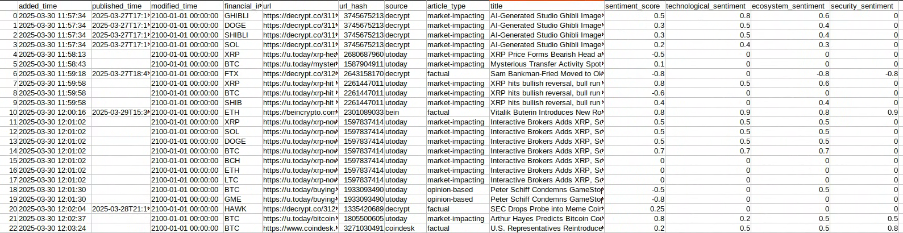

Crypto News Sentiment
May 2, 2025Latest Cryptocurrency Sentiment
Last updated: 2025-07-04 14:00:06 HK
Disclaimer
The information provided on this page is for educational and research purposes only. It should not be considered as financial advice or a recommendation to make any type of investment. Cryptocurrency markets are highly volatile and risky. The sentiment analysis and data presented here:
- Is experimental and may contain errors or inaccuracies
- Should not be used as the sole basis for any investment decisions
- Does not guarantee future results or returns
- May be delayed or not reflect current market conditions
Always conduct your own research and consult with qualified financial advisors before making any investment decisions. Past performance is not indicative of future results. You should never invest more than you can afford to lose.
Table of Contents
Motivation
Alternative data is a rich source of information that can be used to make investment decisions. It can provide insights that are not available in the market data and any type of factors or indicators. The faster you get the information, the better you can make the investment decisions. The Covid vaccine, Brexit, tarrifs, etc. are some examples of the events that moved the market and had a significant impact on the price of the stocks.
In 2024, I started a project to programatically read the news online, clean the text, and then find the sentiment of the news with the hope of using it for trading cryptocurrencies, mostly for my own portfolio.
The data sources are the publicly available news websites which I will list in the data collection section. The sentiment analysis is done as a combination of classical and modern NLP techniques with a touch of proprietary techniques.
Current Status
The project is up and running, with a solid setup for ongoing sentiment analysis. Here's what it offers:
- Real-time sentiment tracking
- Strong error handling and retry systems
- Easy deployment with containers
- Scalable database support
Data Collection
The following is the list of the news websites that I have used to collect the data.
The following news sources are also famous, but they implement bot detection and have more stringent rules for scraping the data. So, I did not use them.
Challenges and Lessons Learned
Developing FinInstruSentiment, our tool for real-time sentiment analysis of financial instruments, was a journey filled with hurdles that taught us invaluable lessons about creating reliable, scalable systems for financial data analysis. Below, we dive into the key challenges we faced, the solutions we implemented, and the insights we gained along the way.
1. Outsmarting Bot Detection Systems
Scraping data from financial websites was no easy feat, as many of these platforms use advanced bot detection to block automated systems. Getting past these defenses required us to think like humans—or at least make our system behave like one.
- Dynamic Header Rotation: To avoid being flagged, we set up our headless browsers to constantly switch up HTTP headers, like user agents, to mimic different devices and browsers. This kept our requests looking fresh and less robotic.
- Randomized Request Patterns: We added random delays between requests to emulate how a human might browse, avoiding predictable patterns that could trigger bot detection.
- IP Rotation via Proxies: By routing our requests through a pool of proxy servers, we distributed them across multiple IP addresses, reducing the risk of being blocked for excessive activity from a single source.
- Regular Updates: We regularly updated our scraping tools to stay ahead of new bot detection techniques.
These tactics not only helped us gather data consistently but also taught us the importance of staying adaptable in the face of evolving web security measures.
2. Keeping the System Stable Under Pressure
Running headless browsers and Selenium for large-scale data collection put a serious strain on our system's resources, especially when deployed on AWS EC2 instances. We quickly learned that stability was just as critical as functionality.
- Memory Leaks and Orphaned Processes: Early on, we noticed that Selenium and headless browsers sometimes left behind "zombie" processes, eating up memory and crashing our servers. This was a major bottleneck for continuous operation.
- Solutions that worked:
- Automated Restarts: We scheduled daily system restarts to clear out lingering processes and keep things running smoothly.
- Process Monitoring Scripts: We wrote scripts to detect and terminate orphaned processes, preventing memory exhaustion.
- Resource Thresholds: We set up alerts and automatic recovery procedures to kick in when CPU or memory usage crossed critical thresholds, ensuring the system could self-correct before crashing.
These fixes transformed our system into a more resilient beast, capable of handling heavy workloads without constant babysitting. The lesson? Proactive monitoring and automated recovery are non-negotiable for production-grade systems.
3. Cracking the Code on Sentiment Analysis
The heart of FinInstruSentiment is its ability to accurately analyze sentiment around financial instruments, but this was by far our most complex challenge. Financial texts are messy—full of jargon, abbreviations, and context that can shift the meaning of a single sentence. Here's how we tackled it:
- Pinpointing Financial Entities: We leaned heavily on natural language processing (NLP) to identify mentions of specific financial instruments. This meant teaching the system to recognize:
- Direct references (e.g., "Apple stock")
- Ticker symbols (e.g., "AAPL")
- Company aliases (e.g., "Big Tech" for major tech firms)
Getting this right required training our models on diverse datasets and constantly refining them to handle edge cases.
- Granular Sentiment Analysis: Financial sentiment isn't just "positive" or "negative." We built a system that breaks it down into multiple dimensions:
- Market sentiment: How the broader market views the instrument.
- Technical factors: Sentiment tied to price trends, trading volume, or technical indicators.
- Security issues: Sentiment around cybersecurity risks or data breaches.
- Regulatory impacts: How laws or policies might affect the instrument's outlook.
This multi-angle approach gave us a richer, more actionable understanding of sentiment.
- Context-Aware Processing: Financial news often mentions multiple instruments in one article, and the sentiment can vary depending on the context. We enhanced our analyzer to:
- Distinguish between instruments in the same piece of content.
- Understand relationships between news events (e.g., how a merger affects both companies involved).
- Factor in the timing of sentiment (e.g., recent news carries more weight than older reports).
This was a game-changer, allowing us to deliver precise, context-sensitive insights rather than generic sentiment scores.
An example of the dataset
The following is an example of the dataset that I have collected. To just give you an idea of the type of the data that I am dealing with.

Next Steps
This project is ready for its next phase. Here's what I am working on to make it even more effective for traders and analysts:
-
Spotting Predictive Trading Signals:
We'll dive into sentiment data to find patterns that predict market moves. Using machine learning, we'll analyze historical trends and market data to create reliable signals for trading. -
Improving Risk Management & Analysis:
We're adding robust risk management tools, including statistical models to evaluate sentiment signal reliability and dashboards to visualize risks like volatility and exposure. -
Streamlining Data Access:
We'll store sentiment data on AWS S3 for secure access and build a user-friendly API to let developers integrate our insights into their trading platforms. -
Speeding Up Real-Time Processing:
To keep pace with fast markets, we'll optimize our data pipelines and explore serverless architectures to handle demand spikes smoothly. -
Covering More Financial Instruments:
We'll expand to include more stocks, ETFs, and possibly cryptocurrencies, making the system more versatile for users.